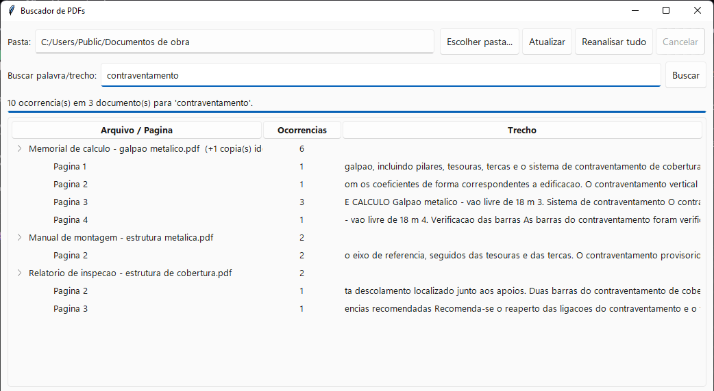
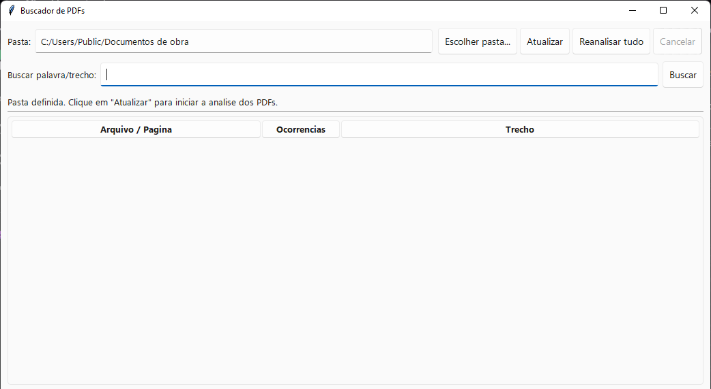
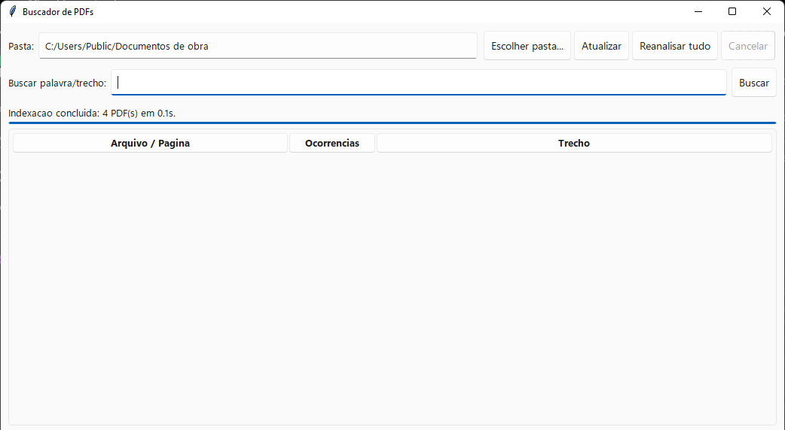
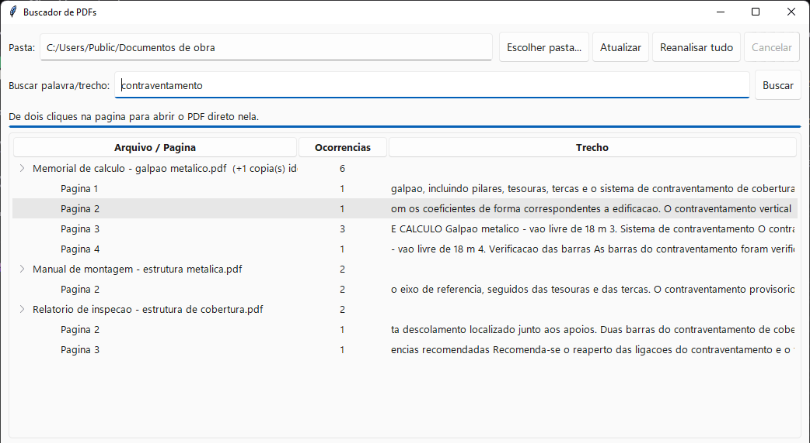

Aponte para uma pasta. Ele lê cada PDF que houver ali dentro, inclusive os escaneados, e responde em qual arquivo e em qual página o termo aparece. Dois cliques abrem o documento já na página certa.

A leitura dos PDFs acontece uma vez por arquivo. Da segunda vez em diante o programa relê apenas o que mudou, e a busca é instantânea.



Passo 1. A pasta está definida e o índice, ainda vazio. A análise não começa sozinha.
Ler o texto de milhares de PDFs é lento; procurar dentro de um índice já pronto não é. O programa guarda o que leu num banco SQLite dentro da própria pasta e, na vez seguinte, confere a data de cada arquivo e relê só os que mudaram. Uma pasta com mil documentos demora na primeira passada e responde na hora nas seguintes.
O mesmo memorial salvo em quatro pastas de obra não vira quatro resultados. O conteúdo de cada arquivo é comparado por hash, e as cópias aparecem agrupadas sob um único documento.
Páginas que são só imagem passam por OCR e entram na busca como qualquer outra. Depende do Tesseract instalado na máquina; sem ele, o resto continua funcionando normalmente.
Página, pagina e PÁGINA encontram a mesma coisa. Uma frase quebrada no meio pela diagramação do PDF continua sendo encontrada inteira.
Se o programa não conseguir gravar o índice na pasta analisada — comum em unidade de rede corporativa —, ele grava ao lado do próprio executável e avisa na barra de status.
Foxit, Adobe Acrobat e Reader, PDF-XChange, SumatraPDF e Edge abrem direto na página encontrada. Em leitores fora dessa lista o PDF abre normalmente, só sem pular a página.
Funciona em qualquer pasta com PDFs: normas, memoriais, manuais, contratos, a papelada toda de uma obra.